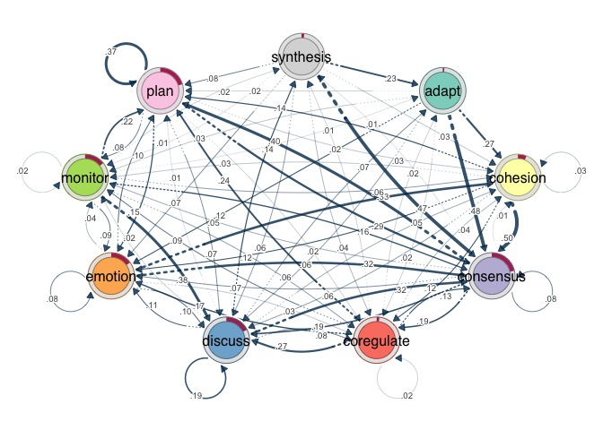
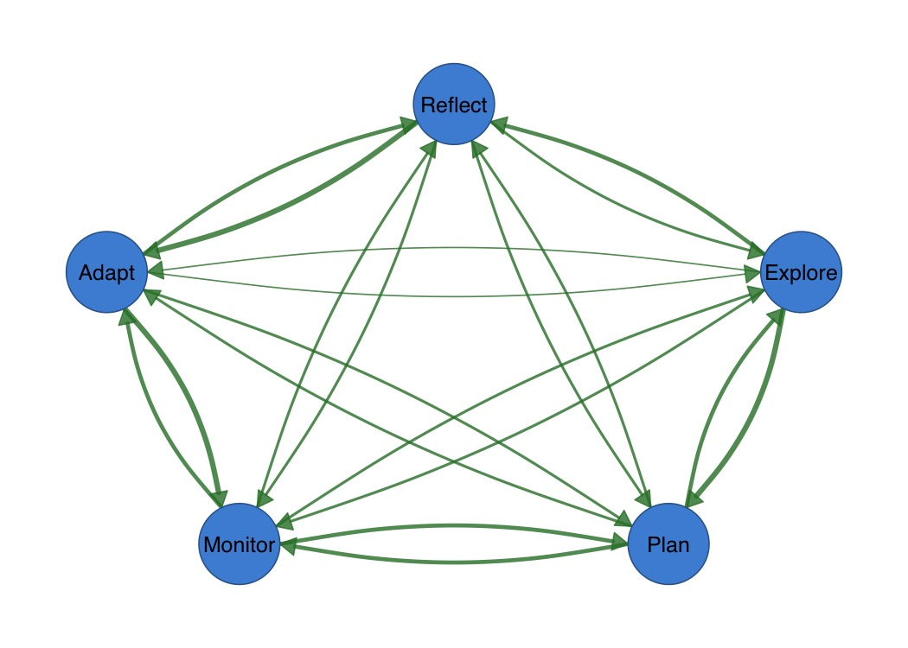
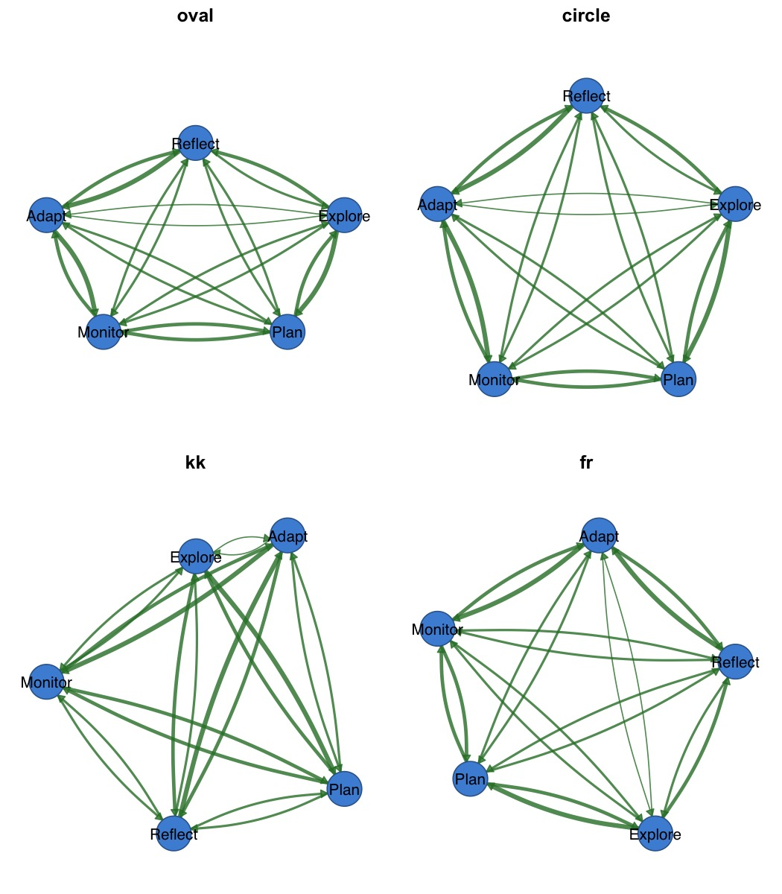
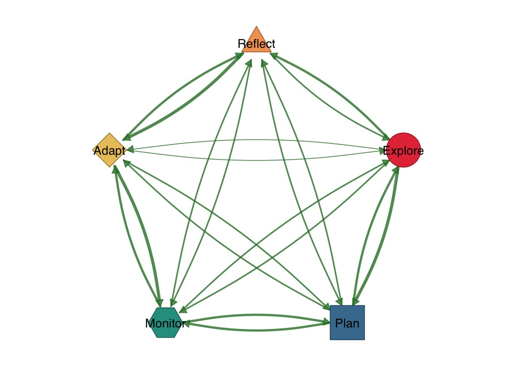
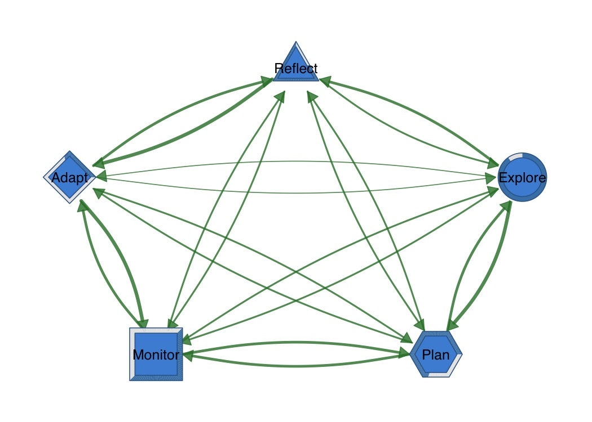
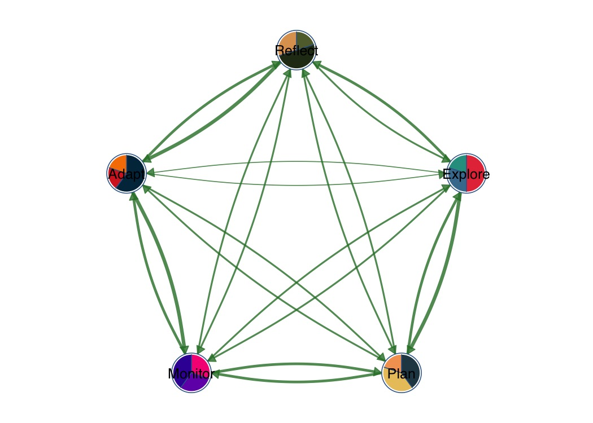
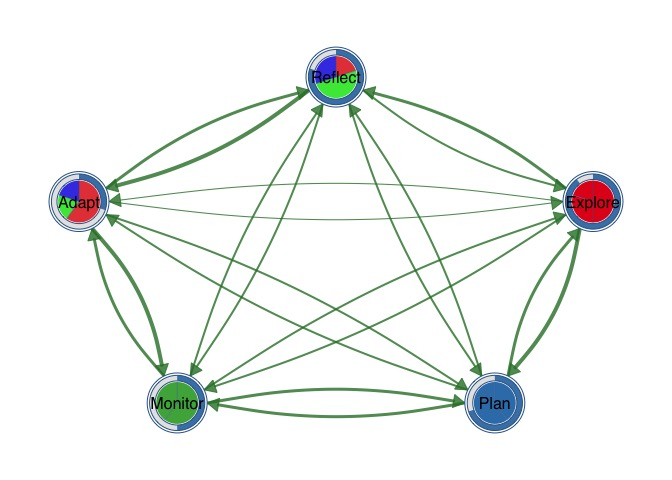
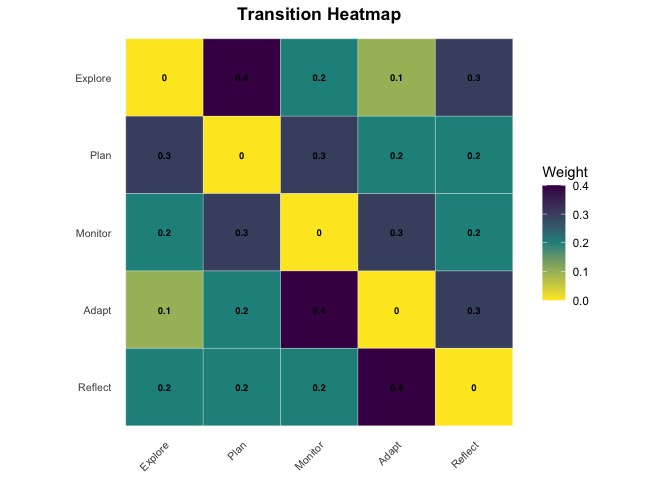
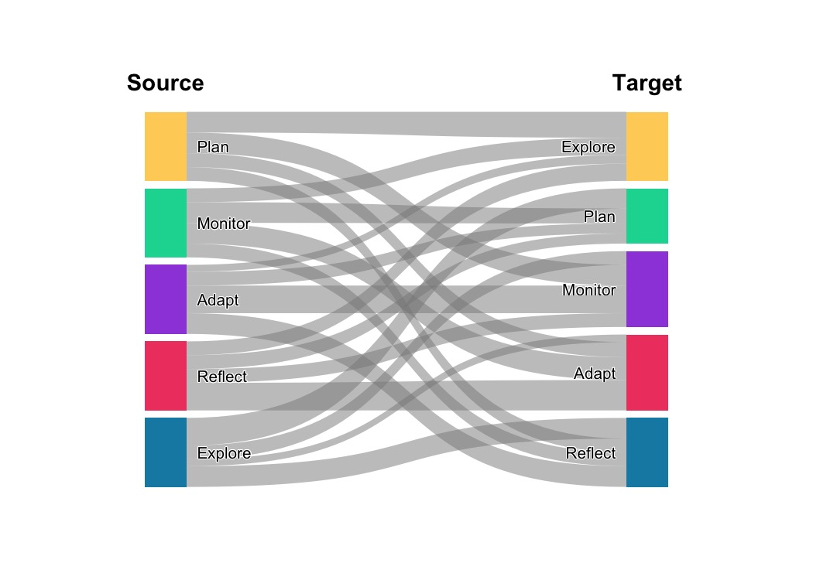

cograph is a modern R package for the analysis, visualization, and manipulation of complex networks. It provides publication-ready plotting with customizable layouts, node shapes, edge styles, and themes through an intuitive, pipe-friendly API. First-class support for Transition Network Analysis (TNA), multilayer networks, and community detection.
Installation
# Install from CRAN
install.packages("cograph")
# Development version from GitHub
devtools::install_github("sonsoleslp/cograph")Features
Network Plotting
| Function | Description |
|---|---|
splot() |
Base R network plot (core engine) |
soplot() |
Grid/ggplot2 network rendering |
tplot() |
qgraph drop-in replacement for TNA |
plot_htna() |
Hierarchical multi-group TNA layouts |
plot_mtna() |
Multi-cluster TNA with shape containers |
plot_mcml() |
Markov Chain Multi-Level visualization |
plot_mlna() |
Multilayer 3D perspective networks |
plot_mixed_network() |
Combined symmetric/asymmetric edges |
Flow and Comparison Plots
| Function | Description |
|---|---|
plot_transitions() |
Alluvial/Sankey flow diagrams |
plot_alluvial() |
Alluvial wrapper with flow coloring |
plot_trajectories() |
Individual tracking with line bundling |
plot_chord() |
Chord diagrams with ticks |
plot_heatmap() |
Adjacency heatmaps with clustering |
plot_compare() |
Difference network visualization |
plot_bootstrap() |
Bootstrap CI result plots |
plot_permutation() |
Permutation test result plots |
Community and Higher-Order Structure
| Function | Description |
|---|---|
overlay_communities() |
Community blob overlays on network plots |
plot_simplicial() |
Higher-order pathway (simplicial complex) visualization |
detect_communities() |
11 igraph algorithms with shorthand wrappers |
communities() |
Unified community detection interface |
Network Analysis
| Function | Description |
|---|---|
centrality() |
23+ centrality measures with individual wrappers |
motifs() / subgraphs()
|
Motif/triad census with per-actor windowing |
robustness() |
Network robustness analysis |
disparity_filter() |
Backbone extraction (Serrano et al. 2009) |
cluster_summary() |
Between/within cluster weight aggregation |
build_mcml() |
Markov Chain Multi-Level model construction |
summarize_network() |
Comprehensive network-level statistics |
verify_with_igraph() |
Cross-validation against igraph |
simplify() |
Prune weak edges |
Multilayer Networks
| Function | Description |
|---|---|
supra_adjacency() |
Supra-adjacency matrix construction |
layer_similarity() |
Layer comparison measures |
aggregate_layers() |
Weight aggregation across layers |
plot_ml_heatmap() |
Multilayer heatmaps with 3D perspective |
Examples
TNA Plot
The primary use case: visualize transition networks from the tna package.
library(tna)
library(cograph)
# Build a TNA model from sequence data
fit <- tna(engagement)
# One-liner visualization
splot(fit)
Simple Network
library(cograph)
# Create a transition matrix
states <- c("Explore", "Plan", "Monitor", "Adapt", "Reflect")
mat <- matrix(
c(0.0, 0.4, 0.2, 0.1, 0.3,
0.3, 0.0, 0.3, 0.2, 0.2,
0.2, 0.3, 0.0, 0.3, 0.2,
0.1, 0.2, 0.4, 0.0, 0.3,
0.2, 0.2, 0.2, 0.4, 0.0),
nrow = 5, byrow = TRUE,
dimnames = list(states, states)
)
splot(mat)
Layouts
par(mfrow = c(2, 2), mar = c(1, 1, 2, 1))
splot(mat, layout = "oval", title = "oval")
splot(mat, layout = "circle", title = "circle")
splot(mat, layout = "kk", title = "kk")
splot(mat, layout = "fr", title = "fr")
Node Shapes
shapes <- c("circle", "square", "hexagon", "diamond", "triangle")
splot(mat,
node_shape = shapes,
node_fill = c("#E63946", "#457B9D", "#2A9D8F", "#E9C46A", "#F4A261"),
layout = "circle"
)
Donuts
Donut nodes show proportional fill with optional polygon shapes.
fills <- c(0.9, 0.7, 0.5, 0.3, 0.8)
splot(mat,
donut_fill = fills,
donut_color = "steelblue",
donut_shape = c("circle", "hexagon", "square", "diamond", "triangle")
)
Pies
Pie chart nodes with per-node color palettes.
pie_vals <- list(
c(0.5, 0.3, 0.2),
c(0.4, 0.4, 0.2),
c(0.3, 0.3, 0.4),
c(0.6, 0.2, 0.2),
c(0.2, 0.5, 0.3)
)
pie_cols <- list(
c("#E63946", "#457B9D", "#2A9D8F"),
c("#264653", "#E9C46A", "#F4A261"),
c("#F72585", "#7209B7", "#3A0CA3"),
c("#003049", "#D62828", "#F77F00"),
c("#606C38", "#283618", "#DDA15E")
)
splot(mat,
node_shape = "pie",
pie_values = pie_vals,
pie_colors = pie_cols,
layout = "circle"
)
Donut + Pie Combo
Combine outer donut ring with inner pie segments.
splot(mat,
donut_fill = fills,
donut_color = "steelblue",
pie_values = pie_vals,
pie_colors = c("#E41A1C", "#377EB8", "#4DAF4A")
)
Heatmap
plot_heatmap(mat, show_values = TRUE, colors = "viridis",
value_fontface = "bold", title = "Transition Heatmap")
Alluvial Flow
plot_transitions(mat, flow_color_by = "from", flow_alpha = 0.5,
from_title = "Source", to_title = "Target")